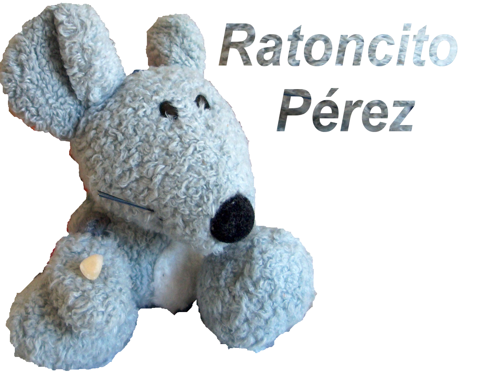

Imágen editada
- Paso 1:
-
Abrimos la foto. Seleccionamos el raton, que podemos hacerlo a trozos, como hicimos con la flor.
- Paso 2:
-
Una vez terminada la selección copiamos y pegamos.
- Paso 3:
-
Abrimos el diálogo de capas y en la selección flotante con el botón derecho del ratón elegimos capa
nueva. Marcamos la capa del fondo y la eliminamos.
- Paso 4:
-
Recortamos la imagen para quedarnos con el ratoncito y parte de la derecha de la imagen.
- Paso 5:
-
Para crear el estilo del texto, tenemos que:
-
Crear un texto
-
Inserta la imagen, seleccionando menú Archivo –> Abrir como capas. Ahora ajusta la imagen a
tu texto con ayuda de la herramienta de Escalado.
-
Desactiva la visibilidad de la imagen, dando clic en el icono con forma de ojo abierto que
se encuentra a un lado de la imagen
en el cuadro de diálogo de capas, si no tienes este
cuadro visible selecciona menú Ventanas –> Diálogos empotrables –> Capas.
-
Selecciona la capa de texto en el cuadro de diálogo de capas, da clic derecho sobre la capa
y selecciona la opción Alfa a selección.
-
Activa nuevamente la capa de la imagen.
-
Presiona ctrl + i y después supr, de esta manera se invierte la selección actual. Guarda la
imagen con la extensión de tu preferencia.
- Paso 6:
-
Guardamos la imágen como formato PNG
Imágen del ratón editada
Imágen original

Imágen editada
